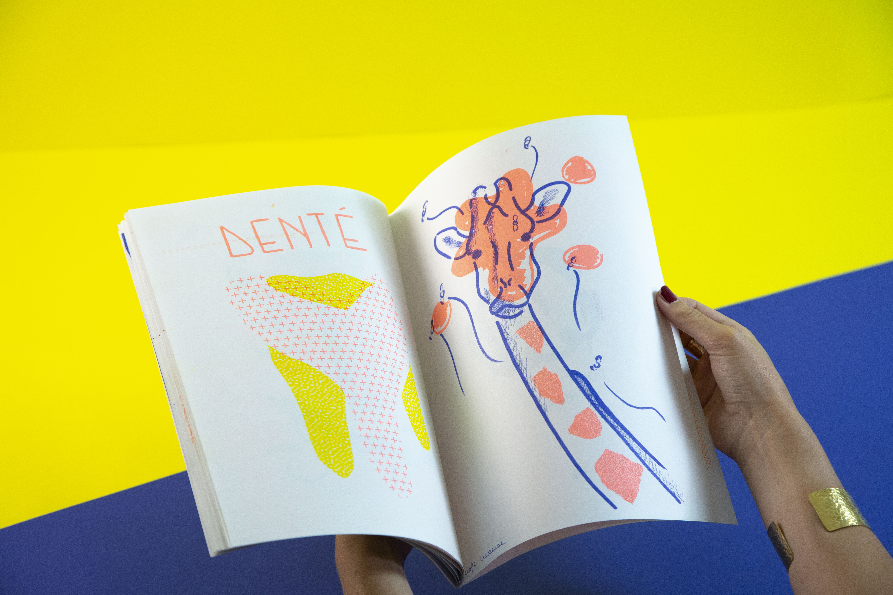
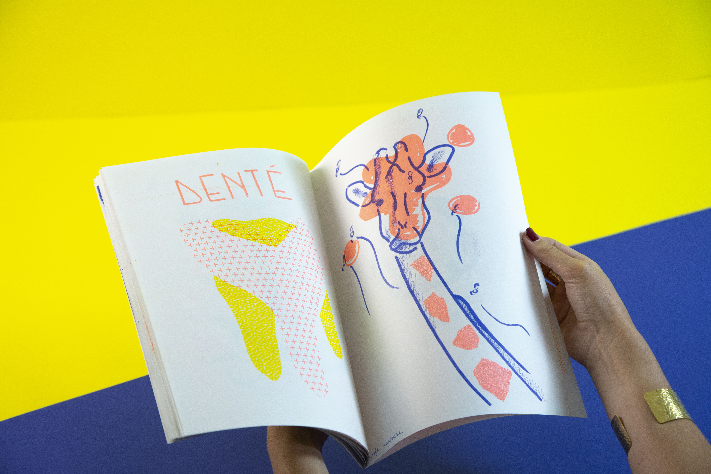

Fanzine - Workshop risographie
Illustration - Méthode d'impression
Création d’une illustration à l’aide de deux mots (Girafe / Crasseuse) lors d’un Workshop risographie avec « les trames ordinaires ».
Designer Graphique
Création d’une illustration à l’aide de deux mots (Girafe / Crasseuse) lors d’un Workshop risographie avec « les trames ordinaires ».
